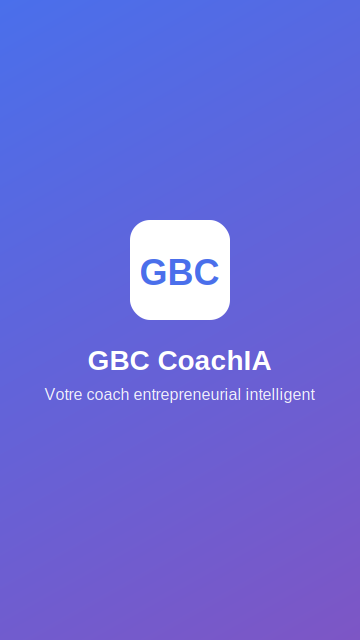
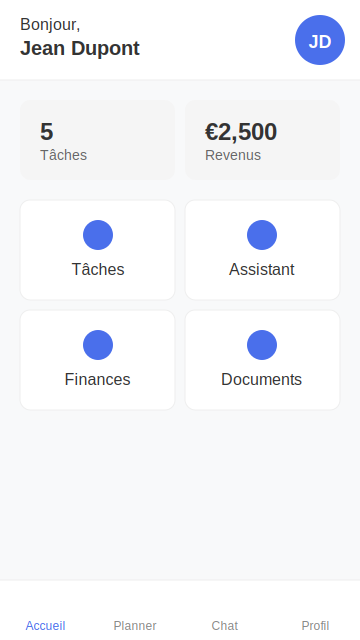
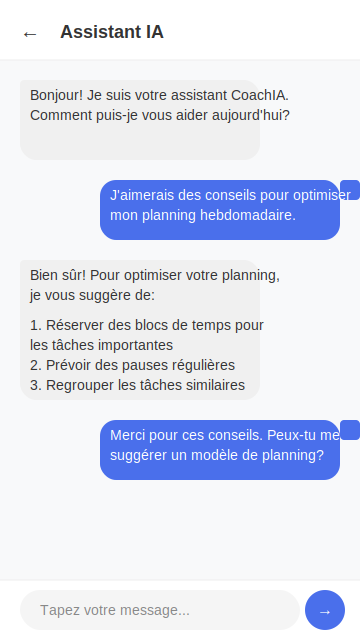
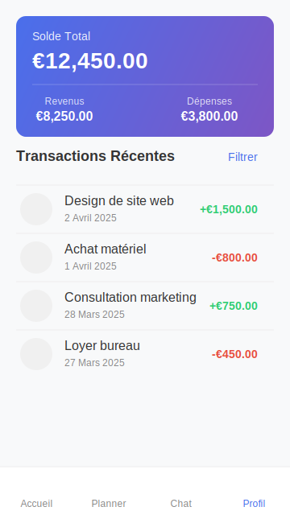
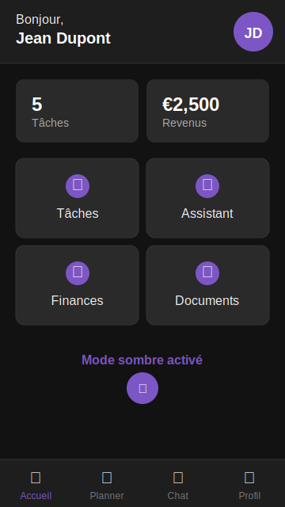

Premier écran affiché au lancement de l'application avec logo, nom et slogan
Vue d'ensemble des tâches, revenus et accès aux principales fonctionnalités
Interface de conversation avec l'IA pour obtenir conseils et assistance
Suivi des revenus, dépenses et transactions pour optimiser les finances
Interface adaptée pour une utilisation nocturne avec thème sombre
